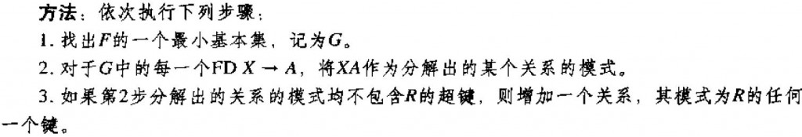
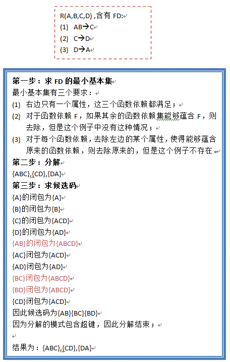

#第一范式(1NF)
定义：如果关系模式R的所有属性的域都是原子的，那么称关系模式 R 属于第一范式。
通俗的讲，第一范式就是属性不可再分。比如地址属性，可以再分为省、市、县等属性，所以在这种情况下，地址属性所在的关系模式就不符合第一范式。
#第二范式(2NF)
定义：若 R 满足第一范式，且每一个非主属性完全函数依赖于主码，则R满足第二范式。
这里首先补充函数依赖的知识
#平凡依赖和非平凡依赖
如果 A->B，A 是 B 的超集，则称此函数依赖为平凡的。
🌰：A->A AB->A ABC->AB 都是平凡依赖（此处的 A、B、C 为原子属性）
非平凡依赖就是不包含自己或包含自己的集决定自己的函数依赖。
#完全依赖和部分依赖
函数依赖 A->B 称为部分依赖的条件是存在 A 的真子集 C 使得 C->B。即 A 中的一部分就可以决定 B，不需要所有的属性来决定 B。
反之，需要 A 中所有的属性才能来决定 B，缺一不可，那么 A->B 就是一个完全依赖。
#传递依赖
如果 A、B 是两个属性集，存在 A->B，如果 c 是一个属性，并且 c 不属于 A 或 B，并且存在 B->c，那么 c 就传递依赖于 A。
根据 2NF 的定义，我们可以知道，单属性主键的关系模式一定符合第二范式。
#第三范式(3NF)
定义：对于 F*(F 的闭包)中所有形如 A->B 的函数依赖（其中 A、B 都包含于 R），以下至少一项成立：
· A->B是一个平凡的函数依赖
· A是R的一个超码
· B-A中的每个属性c都包含于R的一个候选码中
简单的说，若 R 满足第二范式，且每一个非主属性都不传递函数依赖于主码，则R满足第三范式。
即不存在如下依赖关系：
关键字段 → 非关键字段x → 非关键字段 y
🌰 假定学生关系表为 Student(学号, 姓名, 年龄, 所在学院, 学院地点, 学院电话)，关键字为单一关键字"学号"，因为存在如下决定关系：
(学号) → (姓名, 年龄, 所在学院, 学院地点, 学院电话)
这个数据库是符合 2NF 的，但是不符合 3NF，因为存在如下决定关系：
(学号) → (所在学院) → (学院地点, 学院电话)
即存在非关键字段"学院地点"、"学院电话"对关键字段"学号"的传递函数依赖。
#BC 范式(BCNF)
定义：若 R 满足第三范式，且每一个主属性都不部分函数依赖或传递函数依赖于主码，则 R 满足第三范式。
· 每一个决定属性集（因素）都包含（候选）码
· R中的所有属性（主，非主属性）都完全函数依赖于码
🌰 假设仓库管理关系表为 StorehouseManage (仓库 ID, 存储物品 ID, 管理员 ID, 数量)，且有一个管理员只在一个仓库工作；一个仓库可以存储多种物品。这个数据库表中存在如下决定关系：
(仓库 ID, 存储物品 ID) →(管理员 ID, 数量)
(管理员 ID, 存储物品 ID) → (仓库 ID, 数量)
所以，(仓库 ID, 存储物品 ID)和(管理员 ID, 存储物品 ID)都是 StorehouseManage 的候选关键字，表中的唯一非关键字段为数量，它是符合第三范式的。但是，由于存在如下决定关系：
(仓库 ID) → (管理员 ID)
(管理员 ID) → (仓库 ID) 即存在关键字段决定关键字段的情况，所以其不符合 BCNF 范式。
3NF 的“不彻底”性表现在可能存在主属性对码的部分依赖和传递依赖。
#BCNF 分解算法
|
|
🌰

#3NF 分解算法

